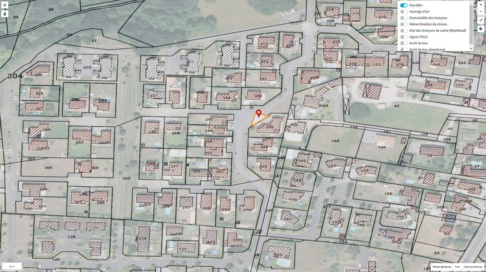
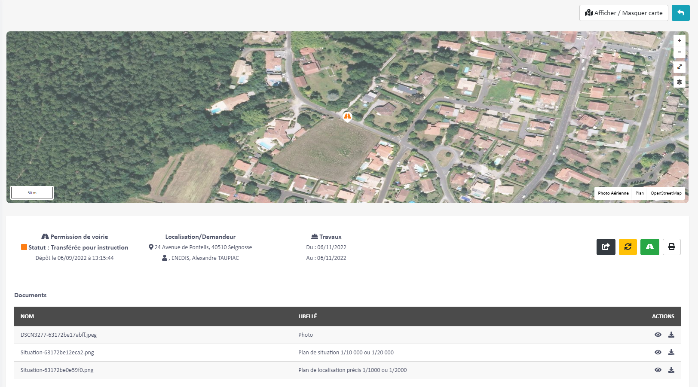

MACS Gestion de voirie du domaine publique

Contexte
Dans le cadre de mon alternance au Groupe AEN, l’entreprise IF Technologies a été mandatée par la MACS pour développer un portail web qui centralise les demandes concernant la gestion du domaine public routier (GDPR).
La Communauté de communes de Maremme-Adour-Côte-Sud regroupe 24 communes, elle souhaite dématérialiser ses demandes de travaux sur la voie publique afin d’accélérer et faciliter le dépôt et le retour d’une demande de travaux sur voie publique.
Pour répondre à ce besoin il a été convenu avec l’entreprise If Technologies de réaliser un portail web « service as software » pour mettre en relation les demandeurs (Particuliers/Entreprises) avec les instructeurs (Gestionnaires de voirie/Élu(e)s).
Ce portail web ouvert au public après la création d’un compte permet de déposer une demande de permission de voirie ou d’accès ainsi qu’une demande d’alignement individuel.
Il permet aussi de pouvoir suivre l’instruction de la demande, avec la possibilité de récupérer automatiquement l’arrêté signé par l’élu(e) ou de recevoir un mail de notification pour avertir du refus.
Travaux réalisés
Mon entreprise m'a confié la réalisation de ce projet avec une maquette validée par la CCMACS. La première étape a été de planifier les tâches pour estimer une date de rendu et définir un montant auprès du client.
La deuxième étape a été le choix des technologies pour réaliser ce projet, étant donné la dimension web du projet, PHP (environnement de travail et connaissances perso).
En me basant sur mes connaissances, j’ai opté pour une séparation back end (API Symfony) et front end (Vue.Js), avec une base de données SQL pour sa dimension géographique notamment pour la localisation de la demande.
Grâce à ce projet j’ai donc pu apprendre à utiliser la dimension géométrique de SQL. Quand l’utilisateur dépose une demande il doit dessiner sur une carte l’emprise des travaux. En croisant le dessin de l’utilisateur et les données cadastrales EDIGEO, nous pouvons remplir automatiquement le formulaire de demande avec la liste des parcelles concernées par les travaux.
Le choix d’une API se justifie par sa capacité à pouvoir communiquer avec d’autres systèmes. Sachant qu’une application mobile, destinée aux utilisateurs sur le terrain, était prévue après la sortie du portail web. Cette application mobile permettra d’ajouter des documents à une demande depuis un smartphone.
Le développement s’est déroulé sans soucis particulier grâce à l’utilisation de GIT, j’ai créé deux projets, un pour le développement et un autre destiné à rester en ligne recevant les mises à jour.
Les premiers échanges avec le service voirie de la MACS pour le recueil des besoins et le maquettage ont été faits par mon chef de projet, j’ai ensuite pu commencer le développement accompagné d’un prestataire.
Après avoir suffisamment avancé sur le projet, mon chef de projet m’a fait confiance et m’a laissé faire les échanges avec le client et j’ai donc participé à toutes les réunions et points d’étapes de ce projet.
Nous avons fait une première présentation du produit, et des changements/évolutions ont été souhaités ce qui a augmenté le risque de ne pas respecter la « deadline », le travail était conséquent et nous n'étions que deux développeurs sur ce projet.
Résultat
En travaillant sur ce projet j’ai pu affiner mes compétences de développeur full stack web et apprendre à manipuler des informations géographiques avec Post Gis.
Le mise en production du site a consolidé la confiance de la MACS avec mon entreprise.
Ce genre de service en ligne devient de plus en plus populaire auprès des communes et communautés de communes et permet à l’état Français de suivre la voie de la dématérialisation.